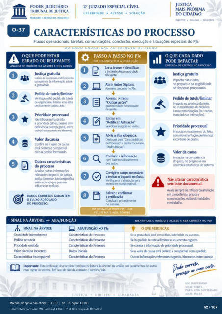

Transcrição automática em português, ainda não revisada. Confira grafia, prazos e termos jurídicos na imagem e no PDF antes de utilizar.
O QUE PODE ESTAR
ERRADO OU RELEVANTE
ANALISE OS INDicos NA ÁRVORE E NOS AUTOS
lúio corre"), irxkf«ilmto ausêrwia Inforrn*) sare
a vatuúk. Pedido de tutela/liminar
Venfique se há ;xildo tuteia urgência liminar e está
&vidarnente cuiastrak). Prioridade prtxessual
Identifique se há direito a 7ioridade (doso.
deficiéncia. grave. entre wtros) e cmsta sisterna
Valor da causa Confira o valor da causa
está correto e compativel o formulada
Outras características do prcxesso
Analise outras rekvantes (segrKi0 justiça,
justo itirerante. tutela entre outras) que gxssam
influerriar no fluxo
DADOS CORRETOS GARANTEM
O FLUXO ADEQUADO
DO PROCESSO.
SINAL NA ÁRVORE ABA/FUNÇÃO
CELERIDADE • ACESSO • SOLUÇÃO
TRABALHO A SERVIÇO DA CIDADANIA
oo
DIREITOS • DIÁLOGO • SOLUÇÕES
CARACTERÍSTICAS DO PROCESSO
Fluxos operacionais. tarefas, comunicações. conclusão, execução e situações especiais do PJe.
PASSO A PASSO NO PJe
DO DIAGNÓSTICO À CORRECÀO
Ler a árvore e identificar a inconsistência ou o dado
relevante. Abrir Autos Digitais.
Aces* 0 PJe. Acessar o menu
"Outras quando hm:ver necessidade
apste. Entrar em
"Retificar Autuação" *lecione a
Abrir a aba para -Características
do Prtxesso• e. conforrne o ca%', Iniciais".
Conferir a informação com base dccumentos
chs autos. 4-
Corrigir o camp necessário e revisar o impacto no fluxo.
Verifiqtr se a alteração gera efeitos em outras rotinas.
Salvar e confirmar a retificação.
Conclua o prrxedimento no sistema.
INFORMAÇÃO CORRETA HOJE.
FLUXO MAIS SEMBRE.
O QUE CADA DADO
PODE IMPACTAR
ENTENDA OS EFEITOS NO PROCESSO
Justiça gratuita Impacta nas custas,
no preparo e na exigibilidade de desvx•sas prcxessuais.
Pedido de tutela/liminar na urgérria do feito,
no cumprirnento de e nas (ex.: cartas,
Prioridade processual Impacta no tratarnento do feito,
com rmvimentação preferencial e contrde
Valor da causa Impacta na
do juízo. no preparo e em controles estatisticos sistema
Não alterar característica sem dcxumental.
Avalie sempre reflexos da alter*) em prazos e
witando nulidades e retrabalha
SINAL NA ÁRVORE
inconsistente PKfido tutela
Prioridade omitida Valor da causa incorreto
Característica incompatível
ABA/FUNÇÁO NO PJe
Características do Prcxesso Características do Prcxesso
Características do Prcxesso Dados Iniciais
Características do
IDENTIFIQUE O INDiCIO E ACESSE A ABA CORRETA NO PJe
OQUE VERIFICAR
Se a gratuidade está concedida, indeferida Ou ausente. Se há de tutela/liminar e seu correto registro.
Se consta a informação de prioridade prcxessual. Se 0 valor da causa está correto e compativel com 0 pdido.
Outras relevantes itinerante, entre outras). Importante: Esta verificaçà) deve ser feita ccxn na k•itura da árvore. na análise dcx•umentos autos
e nas regras sistema. Em caso chivida. consulte o cartório/juiz cerf_ cate
UM JUDICIARIO
VAIS FORTE
PARA UMA SOCIEDADE.
Ver também o infográfico original (página 42)
